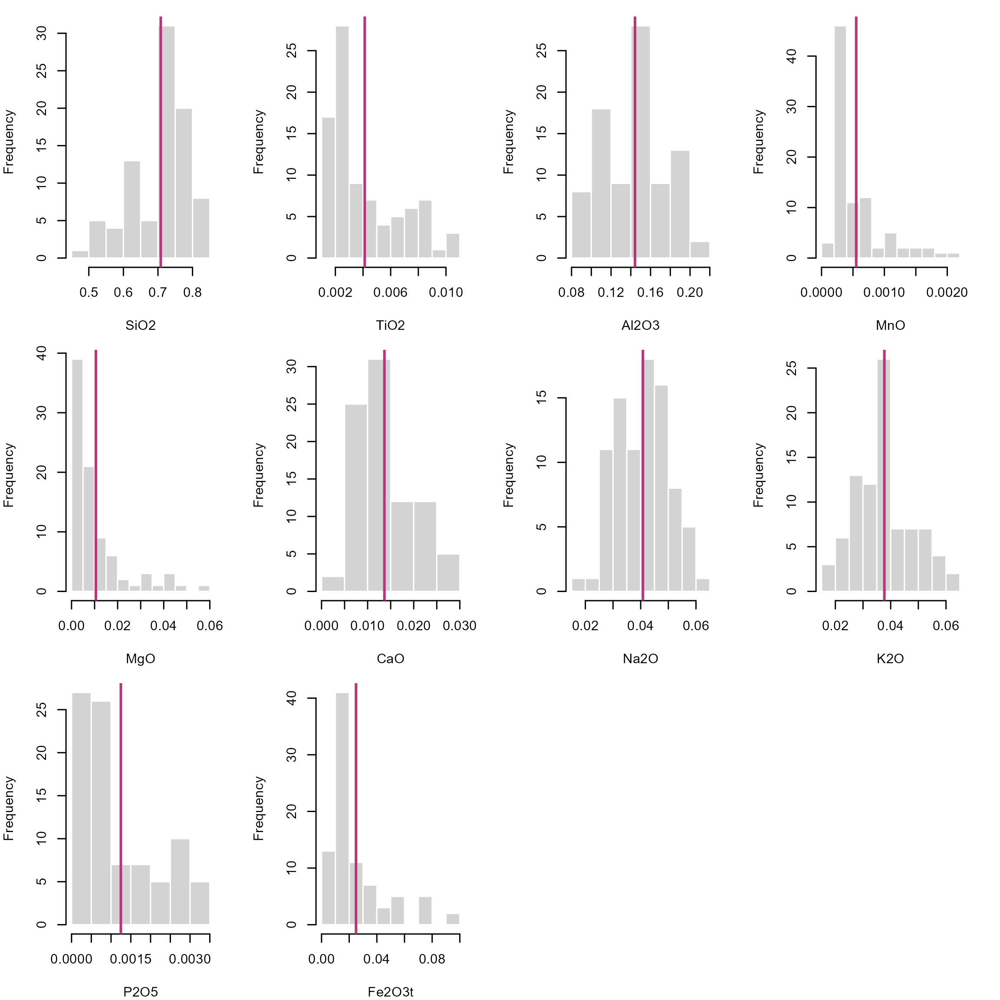
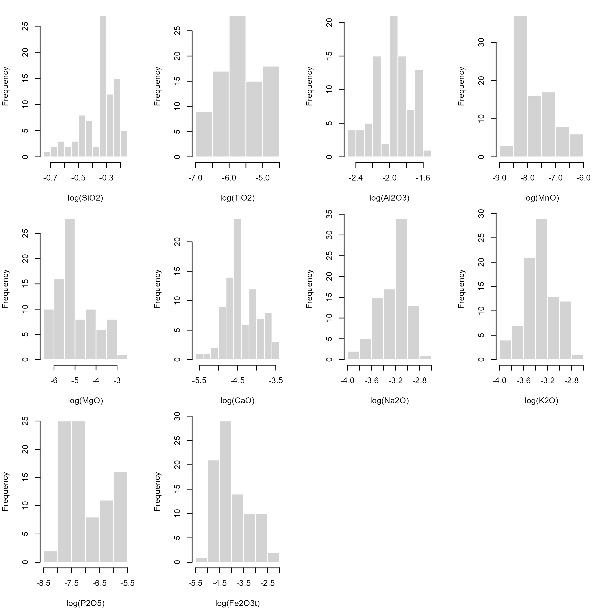
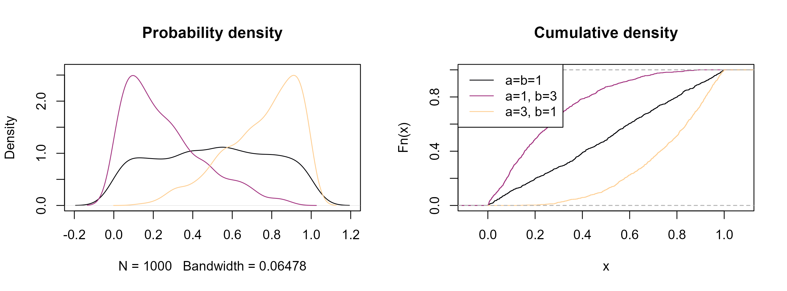
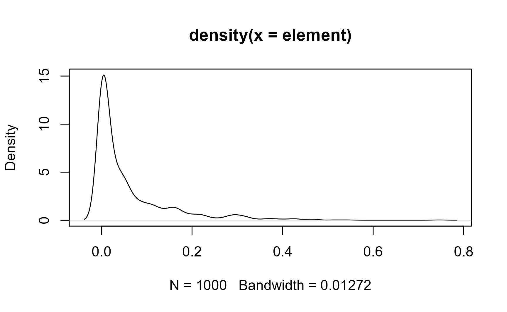
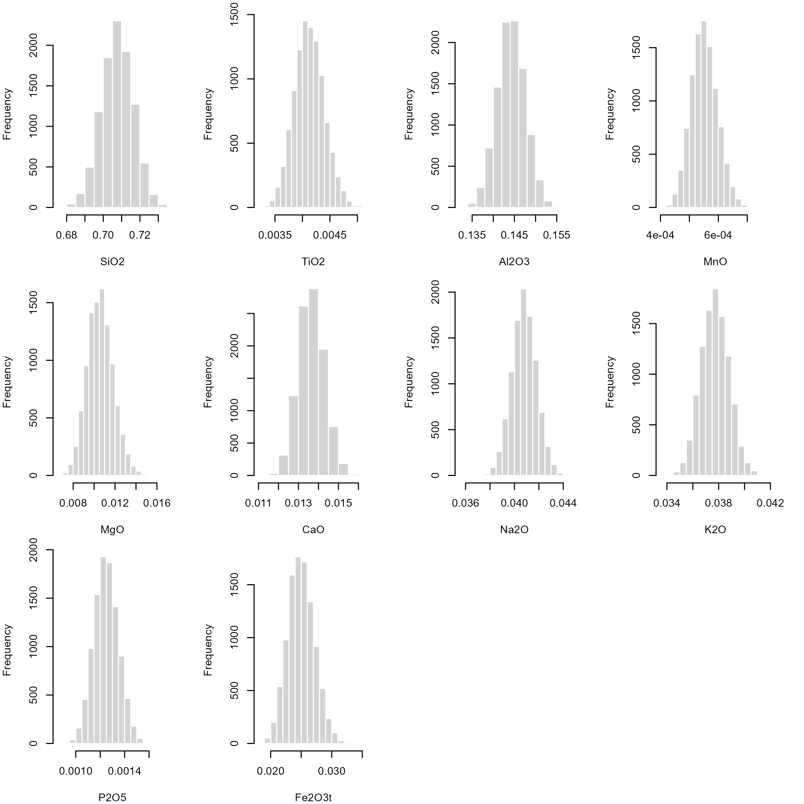
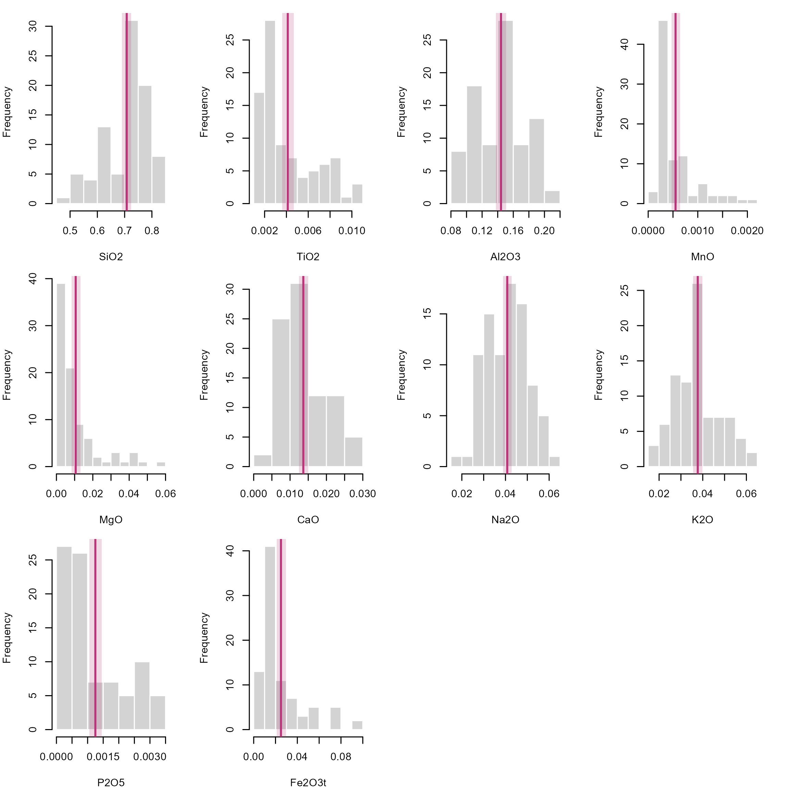
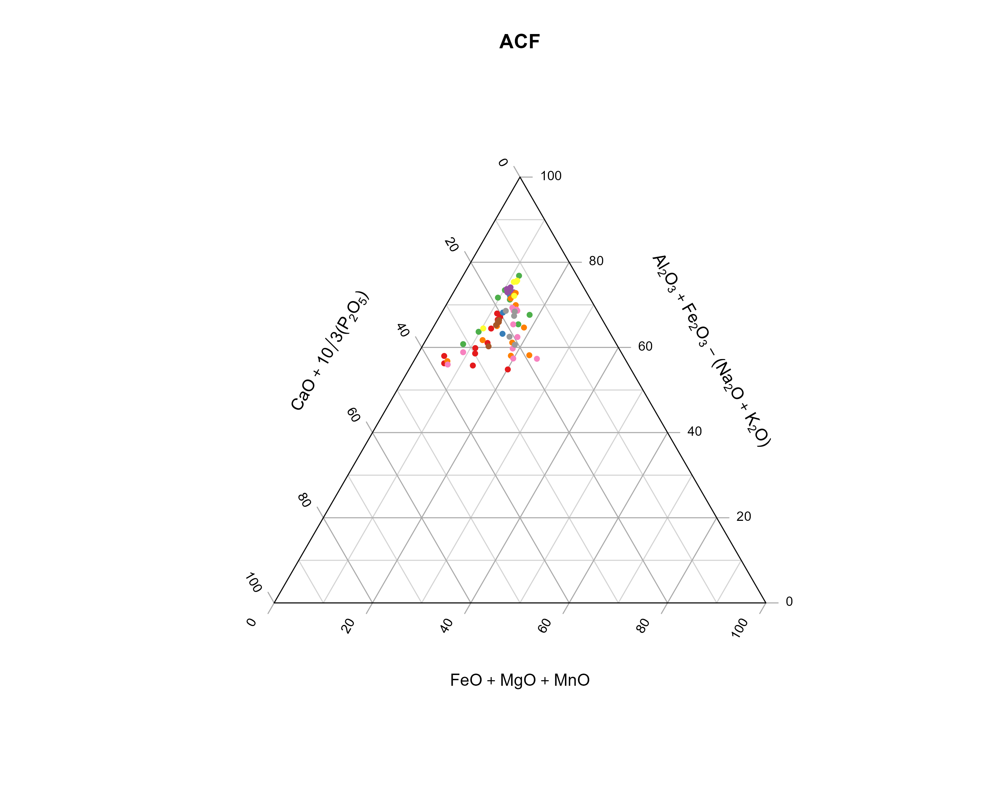
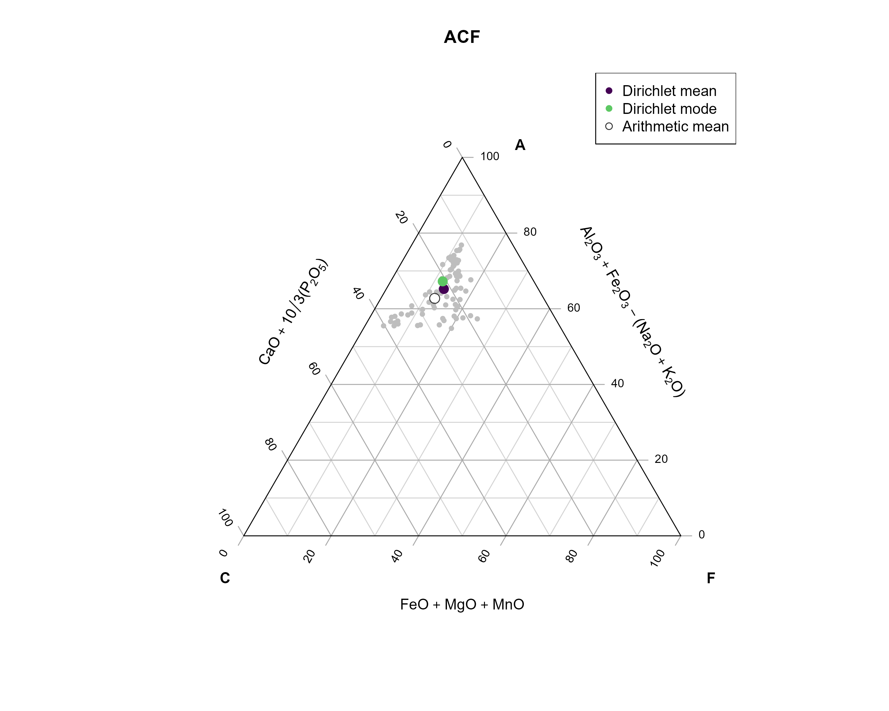
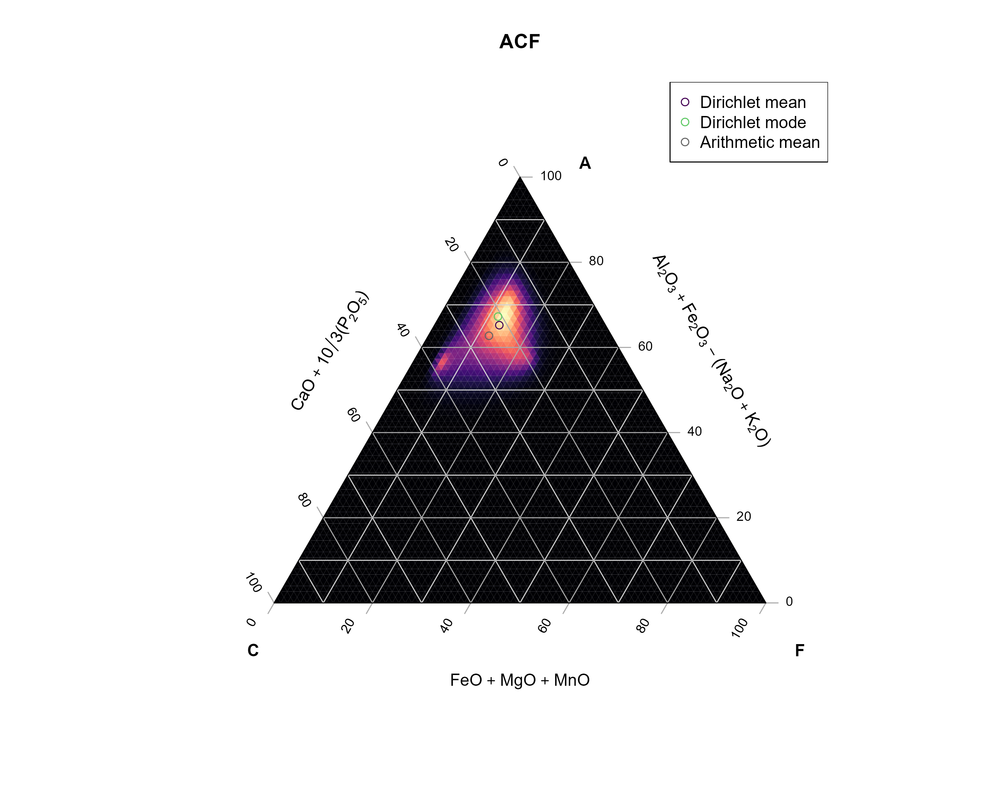

Show the required packages for this tutorial
library(fitdistrplus)
library(compositions)
library(Ternary)
library(RColorBrewer)
library(viridis)library(fitdistrplus)
library(compositions)
library(Ternary)
library(RColorBrewer)
library(viridis)Geochemical data tables look like this:
data(Aar, package = "compositions")
Aar <- Aar[c(1, 3:13)]
head(Aar)
## # A tibble: 6 × 12
## Sample SiO2 TiO2 Al2O3 MnO MgO CaO Na2O K2O P2O5 Fe2O3t SumOxides
## <chr> <dbl> <dbl> <dbl> <dbl> <dbl> <dbl> <dbl> <dbl> <dbl> <dbl> <dbl>
## 1 RT1-1 73.4 0.22 14.2 0.037 0.48 1.04 4.33 4.18 0.06 1.74 99.7
## 2 RT1-1 73.9 0.26 14 0.038 0.51 1.14 4.32 3.95 0.07 1.72 99.9
## 3 RT1-1 73.8 0.3 13.8 0.041 0.55 1.15 4.31 3.82 0.07 1.82 99.8
## 4 RT1-1 78.1 0.32 11.4 0.043 0.57 1.02 3.41 3.16 0.06 1.81 99.9
## 5 RT1-1 78.8 0.39 10.3 0.061 0.86 1.07 2.81 2.92 0.07 2.54 99.8
## 6 RT1-1 74.4 0.54 11.9 0.073 0.94 2.22 2.95 3.2 0.29 2.96 99.5They show the concentrations of certain oxides and elements. Geologists would then like to know if some of these concentrations correlate, if the samples are clustered, or simply how these concentrations are distributed. To find this out, we often explore them visually by plotting them, and sometimes perform statistical analyses. What we often forget is that every statistical analysis makes very specific assumptions about the nature of the underlying data.
The geochemical composition of rocks is commonly expressed as a weight percentage (wt%) or parts per million (ppm). Thus, these proportions are typically vectors of positive (or non-negative) numbers, where the sum is often a constant, such as 100%. However, they often do not actually add up to 100% due to data uncertainties, the detection limits of low-concentration elements or loss of ignition during laboratory analysis. This means the numbers cannot be smaller than 0 or exceed the constant (100%). In other words, these number vectors only form a subset of the real number system. In a ternary system, a composition cannot lie outside a ternary diagram.
We can plot the histograms of the data for each oxide and add a vertical line to indicate the location of the mean.
Here I loop through all the columns using the
lapply()function. Theinvisible()function at the end of the command chain makes sure that the output is the plot only.
# Convert percantages to fractions so that numbers range between 0 and 1
Aar_oxides <- Aar[, 2:11]/100
p <- ncol(Aar_oxides)
n <- nrow(Aar_oxides)
# Arrange the histogram in a 3 (rows) times 4 (columns) grid, and then make the
# plot a bit more thigh by specifying the margins
par(mfrow = c(3, 4), mar = c(4, 4, 1, 2.1))
lapply(seq_len(p), function(i) {
oxide <- as.numeric(as.matrix(Aar_oxides)[, i])
hist(oxide, main = NULL, xlab = colnames(Aar_oxides)[i], border = "white")
abline(v = mean(oxide), col = "#B63679FF", lwd = 2)
}) |>
invisible()
The fact that these numbers only occur within an interval has significant implications for the description of distributions. Firstly, we cannot assume that compositions are drawn from a Normal distribution. This means that our classical statistical parameters (mean, standard deviation, etc.) are somewhat meaningless when it comes to describing how the compositions are distributed. Standard stats may give misleading results, especially when values cluster near 0 or 1, or the distribution is skewed. For example, a mean near \(0.95\) with standard deviation \(\sigma^2 = 0.10\) implies impossible values above 1 as the standard deviation does not respect the bounded nature of data and rarely reflects real uncertainty for skewed data. Since cluster analysis, regression and density estimation all rely on these parameters, most statistical analysis and visual exploration tools (e.g. box plots) will carry the same flaw: they do not represent the true distribution of your data!
stats <- sapply(
seq_len(p),
function(i) {
oxide <- as.numeric(as.matrix(Aar_oxides)[, i])
c(summary(oxide), "sd" = sd(oxide))
}
) |>
t()
rownames(stats) <- colnames(Aar_oxides)
print(stats)
## Min. 1st Qu. Median Mean 3rd Qu. Max. sd
## SiO2 0.49490 0.64515 0.72790 0.7080816 0.771500 0.83690 0.0822708
## TiO2 0.00100 0.00220 0.00300 0.0041241 0.006000 0.01030 0.0025838
## Al2O3 0.08470 0.11710 0.14490 0.1442805 0.162900 0.20290 0.0314320
## MnO 0.00018 0.00027 0.00038 0.0005515 0.000655 0.00219 0.0004296
## MgO 0.00160 0.00360 0.00520 0.0105678 0.012250 0.05660 0.0117803
## CaO 0.00430 0.00930 0.01140 0.0136425 0.017100 0.02960 0.0061220
## Na2O 0.01980 0.03330 0.04200 0.0408092 0.048200 0.06330 0.0094425
## K2O 0.01880 0.03030 0.03780 0.0377161 0.044050 0.06200 0.0100624
## P2O5 0.00030 0.00050 0.00080 0.0012483 0.001850 0.00350 0.0009476
## Fe2O3t 0.00670 0.01120 0.01630 0.0249356 0.030000 0.09360 0.0205774One simple solution is to calculate the statistics on the logarithmic scale. This will stretch all numbers close to 0 and 1 out to negative and positive infinity, respectively. This makes “normally” distributed data approach a symmetric, hence, Gaussian distribution in log space, known as the log-normal distribution, allowing us to use classic statistical estimators.
A calculated mean in log space needs to transformed back into real space using the exp() function. This is essentially the geometric mean: \[ \text{geometric mean}(x) = \text{exp}\Bigl(\frac{\sum_{i=1}^{n} \ln{x_i}}{n}\Bigr) \]
geomean <- function(x, ...){
exp(mean(log(x), ...))
}The histograms for the log-transformed data shows that the distributions look symmetric about a mean:
par(mfrow = c(3, 4), mar = c(4, 4, 1, 2.1))
lapply(
seq_len(p),
function(i) {
oxide <- as.numeric(as.matrix(Aar_oxides)[, i])
log_oxide <- log(oxide)
hist(log_oxide,
main = NULL,
xlab = paste0("log(", colnames(Aar_oxides)[i], ")"),
border = "white"
)
abline(v = geomean(oxide), col = "#B63679FF", lwd = 2)
}
) |>
invisible()
Some zero-value issues can be avoided using the Logit transformation: \[ \text{logit}(x) = \log{\frac{x}{1-x}} \]
logit <- function(x) log(x/(1-x))
logit_mean <- function(x, ...) {
mu <- mean(logit(x), ...)
plogis(mu)
}The only problems with these log-based transformations is that \(\log(0) = \infty\) and \(\log(1) = 0\) and \(\text{logit}(0) = -\infty\) and \(\text{logit}(1) = \infty\), which creates problems when the values are near 0 and 1.
Some concentration data are measured as 0 (not detected) or 1 (pure component). In these cases, the log-transformation will create infinity values. Of course, we could replace such values by some adjustments, e.g. by assigning a constant to the below detection limits (BD), e.g. BD/2, or using some imputation algorithms. However any such adjustment will ultimately add bias. Moreover, the log-transformations are highly non-linear near 0 and 1. Small changes in small concentrations get magnified, and hence their distances will be distorted. This affects distance based methods to estimate the similarity among the data (e.g. clustering and regression algorithms).
The good news is that mathematicians have found ways to handle distributions for such unconventional number systems, without having to transform our data. For numbers defined on an interval, we can use the Beta distribution. While a Normal distribution is described by a mean (\(\mu\)) and a standard deviation (\(\sigma^2\)), a Beta distribution is described by two shape parameters (\(a\) and \(b\), which are both non-negative real numbers).
Notation:
Normal distribution: \(N(\mu, \sigma^2)\)
Beta distribution: \(B(a, b)\)
Here is how they look like and how the parameters change the overall shape of the density functions.
cols <- magma(3, end = .9)
# Generate a random sample of a Beta-distribution
x1 <- rbeta(1000, 1, 1)
x2 <- rbeta(1000, 1, 3)
x3 <- rbeta(1000, 3, 1)
x4 <- rbeta(1000, .5, 1)
x5 <- rbeta(1000, 1, .5)
par(mfrow = c(1, 2))
plot(density(x1), col = cols[1], ylim = c(0, 2.6), main = 'Probability density')
lines(density(x2), col = cols[2])
lines(density(x3), col = cols[3])
plot(ecdf(x1), col = cols[1], main = 'Cumulative density')
lines(ecdf(x2), col = cols[2])
lines(ecdf(x3), col = cols[3])
legend("topleft", col = cols, lty = 1, legend = c("a=b=1", "a=1, b=3", "a=3, b=1"))
See how they resemble the distribution of our geochemical data! Analogous to the normal distribution, the goal now is to find these parameters that best describe the distribution of our data.
Open your R editor (e.g. RStudio)
Import your geochemical data
Load the following packages
and load these functions for calculating summary statistics for the Beta distribution:
# Fit of Beta distribution to data
fitbeta <- function(x, range = c(0, 1), na.rm = FALSE, method = "mle", ...) {
if (is.null(method)) {
xm <- (mean(x, na.rm = na.rm) - range[1]) / (range[2] - range[1])
xv <- var(x, na.rm = na.rm) / (range[2] - range[1])^2
temp1 <- xm * (1 - xm)
if (xv < temp1) {
temp2 <- (temp1 / xv - 1)
alpha <- xm * temp2
beta <- (1 - xm) * temp2
} else {
alpha <- NA
beta <- NA
}
c(shape1 = alpha, shape2 = beta)
} else {
suppressWarnings(
res <- fitdistrplus::fitdist(x, "beta", method, start = list(shape1=1, shape2=1), lower = 0, ...)
)
res$estimate
}
}
# Summary statistics of a Beta distribution
beta_mean <- function(x, shape1 = NULL, shape2 = NULL) {
if (is.null(shape1) | is.null(shape2)) {
ab <- fitbeta(x) |> unname()
shape1 <- ab[1]
shape2 <- ab[2]
}
shape1 / (shape1 + shape2)
}
beta_var <- function(x, shape1 = NULL, shape2 = NULL) {
if (is.null(shape1) | is.null(shape2)) {
ab <- fitbeta(x) |> unname()
shape1 <- ab[1]
shape2 <- ab[2]
}
shape1 * shape2 / (
(shape1 + shape2)^2 * (shape1 + shape2 + 1)
)
}
beta_sd <- function(x, shape1 = NULL, shape2 = NULL) sqrt(beta_var(x, shape1, shape2))
beta_mode <- function(x, shape1 = NULL, shape2 = NULL) {
if (is.null(shape1) | is.null(shape2)) {
ab <- fitbeta(x) |> unname()
shape1 <- ab[1]
shape2 <- ab[2]
}
if (shape1 >= 1 & shape2 >= 1) {
(shape1 - 1) / (shape1 + shape2 - 2)
} else if (shape1 < 1 & shape2 > 1) {
0
} else if (shape2 < 1 & shape1 > 1) {
1
} else {
NA
}
}
beta_quantile <- function(x, shape1 = NULL, shape2 = NULL, probs = seq(0, 1, 0.25)) {
if (is.null(shape1) | is.null(shape2)) {
ab <- fitbeta(x) |> unname()
shape1 <- ab[1]
shape2 <- ab[2]
}
sapply(probs, qbeta, shape1 = shape1, shape2 = shape2, ncp = 0, lower.tail = TRUE, log.p = FALSE) |>
setNames(nm = as.character(probs))
}
beta_median <- function(x, shape1 = NULL, shape2 = NULL) {
beta_quantile(x, shape1, shape2, probs = 0.5) |> unname()
}
beta_ci <- function(x, shape1 = NULL, shape2 = NULL, conf = .95){
if (is.null(shape1) | is.null(shape2)) {
ab <- fitbeta(x) |> unname()
shape1 <- ab[1]
shape2 <- ab[2]
}
alpha <- 1 - conf
ci_param <- qbeta(c(alpha/2, 1 - alpha/2), shape1 = shape1, shape2 = shape2)
}
beta_summary <- function(x, ...) {
ab <- fitbeta(x, ...) |> unname()
c(
Min. = min(element),
Mean = beta_mean(NULL, ab[1], ab[2]),
Median = beta_median(NULL, ab[1], ab[2]),
"1st Qu." = beta_quantile(NULL, ab[1], ab[2], 0.25),
"3rd Qu." = beta_quantile(NULL, ab[1], ab[2], 0.75),
Max. = max(element)
)
}Let’s create a random sample of a Beta function and calculate some statistics:
element <- rbeta(1000, .3, 5)plot(density(element))
fitbeta(element)
## shape1 shape2
## 0.3119 4.8944The mean and the standard deviation of the Beta-distributed sample is
beta_mean(element)
## [1] 0.05991
beta_sd(element)
## [1] 0.09526Or use the beta_summary() function to get them all (mean, median, and quantiles) in one call:
beta_summary(element)
## Min. Mean Median 1st Qu..0.25 3rd Qu..0.75 Max.
## 1.244e-12 5.991e-02 1.759e-02 1.819e-03 7.639e-02 7.461e-01Now compare the differences of the statistical estimators for the different distributions. Here are the different estimates for the mean:
# Mean
means <- setNames(
c(
mean(element),
geomean(element),
logit_mean(element),
beta_mean(element)
), c("Normal", "Log-Normal", "Logit-Normal", "Beta")
)
print(means)
## Normal Log-Normal Logit-Normal Beta
## 0.060348 0.007354 0.007813 0.059909Here are the different estimates for the standard deviation:
# Standard deviation
setNames(
c(
sd(element),
sd(log(element)),
sd(logit(element)),
beta_sd(element)
), c("Normal", "Log-Normal", "Logit-Normal", "Beta")
)
## Normal Log-Normal Logit-Normal Beta
## 0.09248 3.52738 3.58811 0.09526You can see that the Log-Normal distribution gives very different mean and standard deviation values. The means all look similar, yet they are not identical. The standard deviation do look more different. The log- and logit transformed values are hard to interpret, and a back-transformation into real space is not straight-forward.
So what’s the problem? A normal distributed data is described by \(\mu \pm \sigma^2\), meaning the data is symmetric about the mean. However, since our data is clamped between 0 and 1, strongly skewed values can lead to negative predicted values or values that are larger than 1. But we know this is not allowed! Hence, this estimators cannot describe nor predict the data. This problem becomes more significant the more skewed and tailed our data is.
On the other hand, the Beta standard deviation indicates how concentrated or dispersed the distribution is around the mean, considering the Beta’s shape (smaller SD means data are more concentrated or peaked near the mean, while larger SD means more dispersed, flatter, more skewed data). It is only a summary measure, not a bound! So for heavily skewed Beta (a ≪ b or a ≫ b), it is better to report quantiles or confidence intervals instead.
The central limit theory states that the distribution of sample means will be approximately normal if the sample size is large, regardless of the original population’s distribution. This theorem provides an alternative statistical inference technique, called bootstrapping, which does not require assumptions on the underlying population distribution. Hence it provides non-parametric estimate of a statistic.
Bootstrapping uses re-sampling of the data with replacement, to estimate the sampling distribution of a statistic, such as the Beta mean.
Here we calculate oxides’ Beta mean for 10,000 bootstrap samples.
# number of bootstrap samples:
B <- 10000
oxides_beta_boot <- sapply(1:B, function(i) {
idx <- sample.int(n, n, replace = TRUE)
apply(Aar_oxides[idx, ], 2, beta_mean)
})We can inspect the distribution of these bootstrapped samples means:
par(mfrow = c(3, 4), mar = c(4, 4, 1, 2.2))
lapply(seq_len(nrow(oxides_beta_boot)), function(i) {
hist(t(oxides_beta_boot[i, ]), border = "white", xlab = rownames(oxides_beta_boot)[i], main = NA)
}) |>
invisible()
The 2.5% and 97.5% quantile for each of these bootstrap samples are an non-parametric estimate for the 95% confidence interval of our Beta mean:
oxides_beta_CI <- apply(oxides_beta_boot, 1, quantile, probs = c(.025, .975))
print(oxides_beta_CI)
## SiO2 TiO2 Al2O3 MnO MgO CaO Na2O K2O P2O5 Fe2O3t
## 2.5% 0.6904 0.003608 0.1377 0.0004687 0.008321 0.01241 0.03882 0.03564 0.001059 0.02097
## 97.5% 0.7242 0.004676 0.1508 0.0006452 0.013166 0.01495 0.04278 0.03986 0.001450 0.02947Now add the confidence interval of the Beta mean as an vertical rectangle to our histograms:
par(mfrow = c(3, 4), mar = c(4, 4, 1, 2.1))
lapply(seq_len(p), function(i) {
oxide <- Aar_oxides[, i]
hist(oxide, main = NULL, xlab = colnames(Aar_oxides)[i], border = "white")
rect(oxides_beta_CI[1, i], -10, oxides_beta_CI[2, i], 100, col = adjustcolor("#B63679FF", alpha.f = 0.2), border = NA)
abline(v = beta_mean(oxide), col = "#B63679FF", lwd = 2)
}) |>
invisible()
In case you’re still not convinced, the {fitdistrplus} package offers some visual and statistical parameters to compare the goodness of fit of different distributions:
test_dat <- Aar_oxides[, "SiO2"]
fit_n <- fitdist(test_dat, "norm")
fit_ln <- fitdist(test_dat, "lnorm")
fit_lg <- fitdist(test_dat, "logis")
fit_b <- fitdist(test_dat, "beta")
distlist <- list(fit_n, fit_ln, fit_lg, fit_b)
names(distlist) <- c("normal", "lognormal", "logis", "beta")
gofstat(distlist, fitnames = names(distlist))
## Goodness-of-fit statistics
## normal lognormal logis beta
## Kolmogorov-Smirnov statistic 0.1695 0.1934 0.1262 0.1500
## Cramer-von Mises statistic 0.3501 0.4878 0.2314 0.2487
## Anderson-Darling statistic 1.8526 2.6310 1.5702 1.2804
##
## Goodness-of-fit criteria
## normal lognormal logis beta
## Akaike's Information Criterion -184.7 -175.7 -183.5 -191.5
## Bayesian Information Criterion -179.8 -170.8 -178.6 -186.6Here we check which distribution better fits the SiO2 concentrations, and the lowest Akaike’s and Bayesian Information criteria, as well as the low statistics all indicate that the Beta distribution best explain the concentrations. We can also have a visual representation of the data fits:
par(mfrow = c(2, 2))
cdfcomp(distlist, legendtext = names(distlist))
denscomp(distlist, legendtext = names(distlist))
qqcomp(distlist, legendtext = names(distlist))
ppcomp(distlist, legendtext = names(distlist))
So far we only looked at 1-dimension data. But how do we deal with more dimension, i.e., more than just one element (or oxide) concentration?
The Beta distribution is the univariate equivalent of a the Dirichlet distribution (named after German mathematician Johann Peter Gustav Lejeune Dirichlet, pronounced [ləˈʒœn diʀiˈkleː]), which just has some more parameters to describe the multidimensional shapes. Otherwise nothing changes: estimate the shape parameters of the distribution, and then calculate the summary statistic.
Notation: \[ B(\alpha) \] where the shape parameters \(\alpha = (a_1, \ldots, a_K)\) for \(K\) dimensions. As you may see, for \(K=2\), the distribution can be explained by 2 shape parameters, that is the Beta distribution where a concentration values represent the proportion of 2 components (e.g. 0% of element A or 100% of element B).
In the following steps, we will use our example data and calculate the ACF components and plot them in a ternary diagram, here color-coded by the sample name.
ACF diagrams are commonly used in metamorphic petrology to asses their protolith composition (see here for more details). The letters stands for \(A = (Al_2O_3 + Fe_2O_3) - (Na_2O + K2O)\), \(C = CaO - \frac{10}{3} P_2O_5\), and \(F = FeO + MgO + MnO\).
The ternary plotting functions are provided by the {Ternary} package.
Aar_ACF <- cbind(
Aar$Al2O3 + Aar$Fe2O3t - (Aar$Na2O + Aar$K2O),
Aar$CaO + 10 / 3 * Aar$P2O5,
Aar$Fe2O3t + Aar$MgO + Aar$MnO
)
my_categories <- factor(Aar$Sample)
num_unique_categories <- nlevels(my_categories)
palette_colors <- RColorBrewer::brewer.pal(num_unique_categories, "Set1")
assigned_colors <- palette_colors[as.numeric(my_categories)]
Ternary::TernaryPlot(
main = "ACF",
atip = "A", btip = "F", ctip = "C",
alab = expression("Al"[2] * "O"[3] + "Fe"[2] * "O"[3] - "(Na"[2] * "O" + "K"[2] * "O)"),
clab = expression("CaO" + 10 / 3 * "(P"[2] * "O"[5] * ")"),
blab = expression("FeO" + "MgO" + "MnO"),
lab.font = 4,
axis.font = 1,
clockwise = FALSE, grid.lines = 5, grid.minor.lines = 1
)
Ternary::TernaryPoints(Aar_ACF[, 1:3], pch = 16, cex = .8, col = assigned_colors)
Analogous to the Beta distribution, we need to fit a Dirichlet distribution to our data, to calculate summary statistics (mean, mode, variance, ….).
fit_dirichlet <- function(x, ...){
compositions::acomp(x) |>
compositions::fitDirichlet(...)
}
dirichlet_variance <- function(x, ...){
fit <- fit_dirichlet(x, ...)
alpha <- fit$alpha
alpha0 <- sum(alpha)
alphabar <- alpha/alpha0
(alphabar * (1 - alphabar)) / (alpha0 + 1)
}
dirichlet_mean <- function(x, ...){
fit <- fit_dirichlet(x, ...)
alpha <- fit$alpha
alpha0 <- sum(alpha)
alpha/alpha0
}
dirichlet_mode <- function(x, ...){
fit <- fit_dirichlet(x, ...)
alpha <- fit$alpha
stopifnot(any(alpha > 1))
alpha0 <- sum(alpha)
K <- ncol(x)
(alpha - 1) / (alpha0 - K)
}# Fit a Dirichlet distribution
fit_dirichlet(Aar_ACF)
## $alpha
## [1] 32.865 6.642 10.885
##
## $loglikelihood
## [1] 7427
##
## $df
## [1] 171
# Dirichlet mean
dirichlet_mean(Aar_ACF)
## [1] 0.6522 0.1318 0.2160
# Dirichlet mode
dirichlet_mean(Aar_ACF)
## [1] 0.6522 0.1318 0.2160
# Dirichlet variance
dirichlet_variance(Aar_ACF)
## [1] 0.004414 0.002227 0.003295Now we can add the mean and the mode to our ternary diagram:
Ternary::TernaryPlot(
main = "ACF",
atip = "A", btip = "F", ctip = "C",
alab = expression("Al"[2] * "O"[3] + "Fe"[2] * "O"[3] - "(Na"[2] * "O" + "K"[2] * "O)"),
clab = expression("CaO" + 10 / 3 * "(P"[2] * "O"[5] * ")"),
blab = expression("FeO" + "MgO" + "MnO"),
lab.font = 4,
axis.font = 1,
clockwise = FALSE, grid.lines = 5, grid.minor.lines = 1
)
Ternary::TernaryPoints(Aar_ACF[, 1:3], pch = 16, cex = .8, col = "grey")
arithm_mean_ACF <- apply(Aar_ACF, 2, mean)
Ternary::TernaryPoints(arithm_mean_ACF, pch = 1, cex = 1.5, col = "grey20")
Ternary::TernaryPoints(dirichlet_mean(Aar_ACF), pch = 16, cex = 1.5, col = "#440154FF")
Ternary::TernaryPoints(dirichlet_mode(Aar_ACF), pch = 16, cex = 1.5, col = "#5DC863FF")
legend("topright",
legend = c("Dirichlet mean", "Dirichlet mode", "Arithmetic mean"),
col = c("#440154FF", "#5DC863FF", "grey20"), pch = c(16, 16, 1),
)
For fun, I also added the arithmetic mean (basically the mean of each component). You can see how off this one is compared to the data… No? Ok - let’s compare with the density estimate for the data.
My code below defines a Dirichlet kernel that will be used to calculate densities in a ternary diagram. In case your are interested, the functions create a grid of equally spaced points within the ternary diagram, then loops through every grid point and calculate the Dirichlet distribution for the close neighbors, and finally adds all the distributions.
Why not using a classical density estimate? This would result in calculated densities outside of the ternary diagram.
The Dirichlet Kernel takes into account the bound nature of multivariate (here three components) compositional data.
# Calculate the distance between two compositions x and y in a ternary system.
# x and y are both three-element vectors.
tern_distance <- function(x, y) {
sqrt(0.5 * ((x[1] - y[1])^2 + (x[2] - y[2])^2 + (x[3] - y[3])^2))
}
# Dirichlet KDE for ternary diagrams.
#
# h is the bandwidth (usually a value between 0 and 1),
# and n is the grid resolution (amount of points per axis)
kde_Dirichlet <- function(x, h, n = 100, ...) {
vals <- seq(0, 1, length.out = n)
kdegrid <- expand.grid(x = vals, y = vals, z = vals) |>
subset(x + y + z == 1)
x[x <= 0] <- .Machine$double.eps^0.5
x <- x / rowSums(x)
dummy <- function(a, b, c) {
a + b + c
}
dumy_grid <- Ternary::TernaryPointValues(dummy, resolution = n)
nx <- nrow(x)
values <- lapply(seq_len(nrow(kdegrid)), function(i) {
kcenter <- as.numeric(kdegrid[i, ])
xd <- sapply(seq_len(nx), function(k) {
tern_distance(x[k, ], kcenter)
})
idx <- xd <= h
if (sum(idx) > 2) {
dirichlet_params <- compositions::acomp(x[idx, ]) |>
compositions::fitDirichlet()
dirichlet_density <- function(a, b, c) {
compositions::dDirichlet(cbind(a, b, c), alpha = dirichlet_params$alpha, ...)
}
res <- Ternary::TernaryPointValues(dirichlet_density, resolution = n)
res["z", ]
} else {
0
}
})
dumy_grid["z", ] <- Reduce("+", values)
dumy_grid
}Now we apply the kernel density function to our data:
ACF_kde <- kde_Dirichlet(Aar_ACF, h = 0.25, n = 75)
TernaryPlot(
main = "ACF",
atip = "A", btip = "F", ctip = "C",
alab = expression("Al"[2] * "O"[3] + "Fe"[2] * "O"[3] - "(Na"[2] * "O" + "K"[2] * "O)"),
clab = expression("CaO" + 10 / 3 * "(P"[2] * "O"[5] * ")"),
blab = expression("FeO" + "MgO" + "MnO"),
point = "up",
lab.font = 2, tip.font = 2,
axis.font = 1,
clockwise = FALSE, grid.lines = 5, grid.minor.lines = 1,
panel.first = ColourTernary(ACF_kde, spectrum = viridis::magma(512))
)
Ternary::TernaryPoints(arithm_mean_ACF, pch = 1, cex = 1, col = "grey40")
Ternary::TernaryPoints(dirichlet_mean(Aar_ACF), pch = 1, cex = 1, col = "#440154FF")
Ternary::TernaryPoints(dirichlet_mode(Aar_ACF), pch = 1, cex = 1, col = "#5DC863FF")
legend("topright",
legend = c("Dirichlet mean", "Dirichlet mode", "Arithmetic mean"),
col = c("#440154FF", "#5DC863FF", "grey40"), pch = 1,
)
compositions